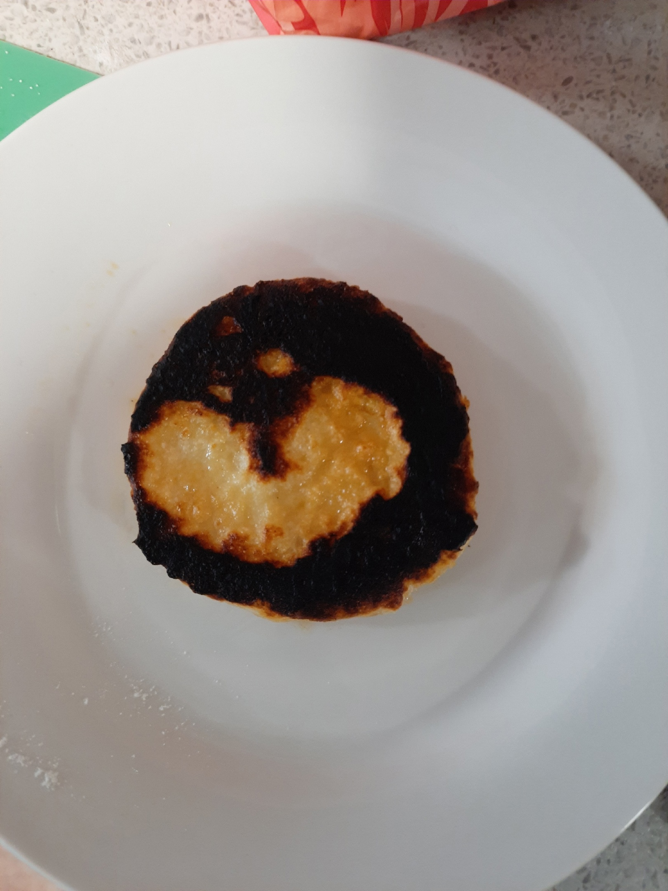

Advice
Don't be afraid of failurs
Every person fail. Don't feel shame of it. You must learn from your mistakes, otherwise they will be repeated again and again. Even though, there can be many failurs, one day it will be a brilliant result. So, don't give up. Here is my burn't cottage cheese pancake, still looks cute(click on image):

Always taste
While preparing food, taste it to fix something while process and not to be disappointed in the end.
Try new
Once you become profficient in frying something, try baking. Don't be stuck on only dish, the cuisine is so vary, you will never find the end of it.
Never leave plates, pots and other empty dishes or with food on the stove
In most cases, a stove is an electrical device that can be turned on accidentally by you or your family. This will allow you to avoid burning and smoke that no one needs, which will immediately fill your entire apartment.